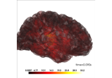
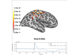
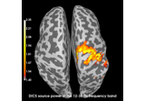
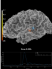
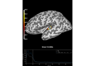
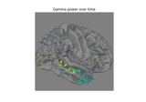
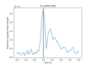
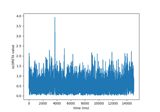

mne.SourceEstimate#
- class mne.SourceEstimate(data, vertices, tmin, tstep, subject=None, verbose=None)[source]#
Container for surface source estimates.
- Parameters:
- data
arrayof shape (n_dipoles, n_times) |tuple, shape (2,) The data in source space. When it is a single array, the left hemisphere is stored in data[:len(vertices[0])] and the right hemisphere is stored in data[-len(vertices[1]):]. When data is a tuple, it contains two arrays:
kernel shape (n_vertices, n_sensors) and
sens_data shape (n_sensors, n_times).
In this case, the source space data corresponds to
np.dot(kernel, sens_data).- vertices
listofarray, shape (2,) Vertex numbers corresponding to the data. The first element of the list contains vertices of left hemisphere and the second element contains vertices of right hemisphere.
- tminscalar
Time point of the first sample in data.
- tstepscalar
Time step between successive samples in data.
- subject
str The FreeSurfer subject name. While not necessary, it is safer to set the subject parameter to avoid analysis errors.
- verbosebool |
str|int|None Control verbosity of the logging output. If
None, use the default verbosity level. See the logging documentation andmne.verbose()for details. Should only be passed as a keyword argument.
- data
- Attributes:
Methods
__add__(a)Add source estimates.
__div__(a)Divide source estimates.
__mul__(a)Multiply source estimates.
__neg__()Negate the source estimate.
__sub__(a)Subtract source estimates.
apply_baseline([baseline,verbose])Baseline correct source estimate data.
apply_function(fun[,picks,dtype,n_jobs,...])Apply a function to a subset of vertices.
apply_hilbert([picks,envelope,n_jobs,...])Compute analytic signal or envelope for a subset of channels/vertices.
bin(width[,tstart,tstop,func])Return a source estimate object with data summarized over time bins.
center_of_mass([subject,hemi,...])Compute the center of mass of activity.
copy()Return copy of source estimate instance.
crop([tmin,tmax,include_tmax])Restrict SourceEstimate to a time interval.
estimate_snr(info,fwd,cov[,verbose])Compute time-varying SNR in the source space.
expand(vertices)Expand SourceEstimate to include more vertices.
extract_label_time_course(labels,src[,...])Extract label time courses for lists of labels.
filter(l_freq,h_freq[,picks,...])Filter a subset of channels/vertices.
get_peak([hemi,tmin,tmax,mode,...])Get location and latency of peak amplitude.
in_label(label)Get a source estimate object restricted to a label.
mean()Make a summary stc file with mean over time points.
plot([subject,surface,hemi,colormap,...])Plot SourceEstimate.
resample(sfreq,*[,npad,method,window,...])Resample data.
save(fname[,ftype,overwrite,verbose])Save the source estimates to a file.
save_as_surface(fname,src,*[,scale,scale_rr])Save a surface source estimate (stc) as a GIFTI file.
savgol_filter(h_freq[,verbose])Filter the data using Savitzky-Golay polynomial method.
sqrt()Take the square root.
sum()Make a summary stc file with sum over time points.
time_as_index(times[,use_rounding])Convert time to indices.
to_data_frame([index,scalings,...])Export data in tabular structure as a pandas DataFrame.
to_original_src(src_orig[,subject_orig,...])Get a source estimate from morphed source to the original subject.
transform(func[,idx,tmin,tmax,copy])Apply linear transform.
transform_data(func[,idx,tmin_idx,tmax_idx])Get data after a linear (time) transform has been applied.
See also
VectorSourceEstimateA container for vector surface source estimates.
VolSourceEstimateA container for volume source estimates.
VolVectorSourceEstimateA container for volume vector source estimates.
MixedSourceEstimateA container for mixed surface + volume source estimates.
- apply_baseline(baseline=(None, 0), *, verbose=None)[source]#
Baseline correct source estimate data.
- Parameters:
- baseline
None|tupleof length 2 The time interval to consider as baseline when applying baseline correction. If
None, do not apply baseline correction. If a tuple(a, b), the interval is betweenaandb(in seconds), including the endpoints. IfaisNone, the beginning of the data is used; and ifbisNone, it is set to the end of the data. If(None, None), the entire time interval is used.Note
The baseline
(a, b)includes both endpoints, i.e. all timepointstsuch thata <= t <= b.Correction is applied to each source individually in the following way:
Calculate the mean signal of the baseline period.
Subtract this mean from the entire source estimate data.
Note
Baseline correction is appropriate when signal and noise are approximately additive, and the noise level can be estimated from the baseline interval. This can be the case for non-normalized source activities (e.g. signed and unsigned MNE), but it is not the case for normalized estimates (e.g. signal-to-noise ratios, dSPM, sLORETA).
Defaults to
(None, 0), i.e. beginning of the the data until time point zero.- verbosebool |
str|int|None Control verbosity of the logging output. If
None, use the default verbosity level. See the logging documentation andmne.verbose()for details. Should only be passed as a keyword argument.
- baseline
- Returns:
- stcinstance of
SourceEstimate The baseline-corrected source estimate object.
- stcinstance of
Notes
Baseline correction can be done multiple times.
Examples using
apply_baseline:
Compute source level time-frequency timecourses using a DICS beamformer
Compute source level time-frequency timecourses using a DICS beamformer
- apply_function(fun, picks=None, dtype=None, n_jobs=None, verbose=None, **kwargs)[source]#
Apply a function to a subset of vertices.
The function
funis applied to the vertices defined inpicks. The source estimate objects data is modified in-place. If the function returns a different data type (e.g.numpy.complex128) it must be specified using thedtypeparameter, which causes the data type of all the data to change (even if the function is only applied to vertices inpicks).Note
If
n_jobs> 1, more memory is required aslen(picks) * n_timesadditional time points need to be temporarily stored in memory.Note
If the data type changes (
dtype != None), more memory is required since the original and the converted data needs to be stored in memory.- Parameters:
- fun
callable() A function to be applied to the channels. The first argument of fun has to be a timeseries (
numpy.ndarray). The function must operate on an array of shape(n_times,)because it will apply vertex-wise. The function must return anndarrayshaped like its input.Note
If
channel_wise=True, one can optionally access the index and/or the name of the currently processed channel within the applied function. This can enable tailored computations for different channels. To use this feature, addch_idxand/orch_nameas additional argument(s) to your function definition.- picks
str| array_like |slice|None Channels to include. Slices and lists of integers will be interpreted as channel indices. In lists, channel type strings (e.g.,
['meg', 'eeg']) will pick channels of those types, channel name strings (e.g.,['MEG0111', 'MEG2623']will pick the given channels. Can also be the string values'all'to pick all channels, or'data'to pick data channels. None (default) will pick all channels. Note that channels ininfo['bads']will be included if their names or indices are explicitly provided.- dtype
numpy.dtype Data type to use after applying the function. If None (default) the data type is not modified.
- n_jobs
int|None The number of jobs to run in parallel. If
-1, it is set to the number of CPU cores. Requires thejoblibpackage.None(default) is a marker for unset that will be interpreted asn_jobs=1(sequential execution) unless the call is performed under ajoblib.parallel_configcontext manager that sets another value forn_jobs. Ignored ifvertice_wise=Falseas the workload is split across vertices.- verbosebool |
str|int|None Control verbosity of the logging output. If
None, use the default verbosity level. See the logging documentation andmne.verbose()for details. Should only be passed as a keyword argument.- **kwargs
dict Additional keyword arguments to pass to
fun.
- fun
- Returns:
- selfinstance of
SourceEstimate The SourceEstimate object with transformed data.
- selfinstance of
- apply_hilbert(picks=None, envelope=False, n_jobs=None, n_fft='auto', *, verbose=None)[source]#
Compute analytic signal or envelope for a subset of channels/vertices.
- Parameters:
- picks
str| array_like |slice|None Channels to include. Slices and lists of integers will be interpreted as channel indices. In lists, channel type strings (e.g.,
['meg', 'eeg']) will pick channels of those types, channel name strings (e.g.,['MEG0111', 'MEG2623']will pick the given channels. Can also be the string values'all'to pick all channels, or'data'to pick data channels. None (default) will pick all data channels (excluding reference MEG channels). Note that channels ininfo['bads']will be included if their names or indices are explicitly provided.- envelopebool
Compute the envelope signal of each channel/vertex. Default False. See Notes.
- n_jobs
int|None The number of jobs to run in parallel. If
-1, it is set to the number of CPU cores. Requires thejoblibpackage.None(default) is a marker for unset that will be interpreted asn_jobs=1(sequential execution) unless the call is performed under ajoblib.parallel_configcontext manager that sets another value forn_jobs.- n_fft
int|None|str Points to use in the FFT for Hilbert transformation. The signal will be padded with zeros before computing Hilbert, then cut back to original length. If None, n == self.n_times. If auto, the next highest fast FFT length will be use.
- verbosebool |
str|int|None Control verbosity of the logging output. If
None, use the default verbosity level. See the logging documentation andmne.verbose()for details. Should only be passed as a keyword argument.
- picks
- Returns:
- selfinstance of
Raw,Epochs,EvokedorSourceEstimate The raw object with transformed data.
- selfinstance of
Notes
Parameters
If
envelope=False, the analytic signal for the channels/vertices defined inpicksis computed and the data of the Raw object is converted to a complex representation (the analytic signal is complex valued).If
envelope=True, the absolute value of the analytic signal for the channels/vertices defined inpicksis computed, resulting in the envelope signal.If envelope=False, more memory is required since the original raw data as well as the analytic signal have temporarily to be stored in memory. If n_jobs > 1, more memory is required as
len(picks) * n_timesadditional time points need to be temporarily stored in memory.Also note that the
n_fftparameter will allow you to pad the signal with zeros before performing the Hilbert transform. This padding is cut off, but it may result in a slightly different result (particularly around the edges). Use at your own risk.Analytic signal
The analytic signal x_a(t) of x(t) is:
x_a = F^{-1}(F(x) 2U) = x + i y
where F is the Fourier transform, U the unit step function, and y the Hilbert transform of x. One usage of the analytic signal is the computation of the envelope signal, which is given by e(t) = abs(x_a(t)). Due to the linearity of Hilbert transform and the MNE inverse solution, the enevlope in source space can be obtained by computing the analytic signal in sensor space, applying the MNE inverse, and computing the envelope in source space.
- bin(width, tstart=None, tstop=None, func=<function mean>)[source]#
Return a source estimate object with data summarized over time bins.
Time bins of
widthseconds. This method is intended for visualization only. No filter is applied to the data before binning, making the method inappropriate as a tool for downsampling data.- Parameters:
- widthscalar
Width of the individual bins in seconds.
- tstartscalar |
None Time point where the first bin starts. The default is the first time point of the stc.
- tstopscalar |
None Last possible time point contained in a bin (if the last bin would be shorter than width it is dropped). The default is the last time point of the stc.
- func
callable() Function that is applied to summarize the data. Needs to accept a numpy.array as first input and an
axiskeyword argument.
- Returns:
- stc
SourceEstimate|VectorSourceEstimate The binned source estimate.
- stc
- center_of_mass(subject=None, hemi=None, restrict_vertices=False, subjects_dir=None, surf='sphere')[source]#
Compute the center of mass of activity.
This function computes the spatial center of mass on the surface as well as the temporal center of mass as in [1].
Note
All activity must occur in a single hemisphere, otherwise an error is raised. The mass of each point in space for computing the spatial center of mass is computed by summing across time, and vice-versa for each point in time in computing the temporal center of mass. This is useful for quantifying spatio-temporal cluster locations, especially when combined with
mne.vertex_to_mni().- Parameters:
- subject
str|None The subject the stc is defined for.
- hemi
int, orNone Calculate the center of mass for the left (0) or right (1) hemisphere. If None, one of the hemispheres must be all zeroes, and the center of mass will be calculated for the other hemisphere (useful for getting COM for clusters).
- restrict_verticesbool |
arrayofint| instance ofSourceSpaces If True, returned vertex will be one from stc. Otherwise, it could be any vertex from surf. If an array of int, the returned vertex will come from that array. If instance of SourceSpaces (as of 0.13), the returned vertex will be from the given source space. For most accuruate estimates, do not restrict vertices.
- subjects_dirpath-like |
None The path to the directory containing the FreeSurfer subjects reconstructions. If
None, defaults to theSUBJECTS_DIRenvironment variable.- surf
str The surface to use for Euclidean distance center of mass finding. The default here is sphere, which finds the center of mass on the spherical surface to help avoid potential issues with cortical folding.
- subject
- Returns:
- vertex
int Vertex of the spatial center of mass for the inferred hemisphere, with each vertex weighted by the sum of the stc across time. For a boolean stc, then, this would be weighted purely by the duration each vertex was active.
- hemi
int Hemisphere the vertex was taken from.
- t
float Time of the temporal center of mass (weighted by the sum across source vertices).
- vertex
References
Examples using
center_of_mass:
Extracting time course from source_estimate object
Extracting time course from source_estimate object
- copy()[source]#
Return copy of source estimate instance.
- Returns:
- stcinstance of
SourceEstimate A copy of the source estimate.
- stcinstance of
Examples using
copy:
Compute source power spectral density (PSD) of VectorView and OPM data
Compute source power spectral density (PSD) of VectorView and OPM data
- crop(tmin=None, tmax=None, include_tmax=True)[source]#
Restrict SourceEstimate to a time interval.
- Parameters:
- tmin
float|None The first time point in seconds. If None the first present is used.
- tmax
float|None The last time point in seconds. If None the last present is used.
- include_tmaxbool
If True (default), include tmax. If False, exclude tmax (similar to how Python indexing typically works).
New in v0.19.
- tmin
- Returns:
- stcinstance of
SourceEstimate The cropped source estimate.
- stcinstance of
Examples using
crop:Plotting with mne.viz.Brain
Permutation t-test on source data with spatio-temporal clustering
Permutation t-test on source data with spatio-temporal clustering
- property data#
Numpy array of source estimate data.
- estimate_snr(info, fwd, cov, verbose=None)[source]#
Compute time-varying SNR in the source space.
This function should only be used with source estimates with units nanoAmperes (i.e., MNE-like solutions, not dSPM or sLORETA). See also [2].
Warning
This function currently only works properly for fixed orientation.
- Parameters:
- info
mne.Info The
mne.Infoobject with information about the sensors and methods of measurement.- fwdinstance of
Forward The forward solution used to create the source estimate.
- covinstance of
Covariance The noise covariance used to estimate the resting cortical activations. Should be an evoked covariance, not empty room.
- verbosebool |
str|int|None Control verbosity of the logging output. If
None, use the default verbosity level. See the logging documentation andmne.verbose()for details. Should only be passed as a keyword argument.
- info
- Returns:
- snr_stcinstance of
SourceEstimate The source estimate with the SNR computed.
- snr_stcinstance of
Notes
We define the SNR in decibels for each source location at each time point as:
\[{\rm SNR} = 10\log_10[\frac{a^2}{N}\sum_k\frac{b_k^2}{s_k^2}]\]where \(\\b_k\) is the signal on sensor \(k\) provided by the forward model for a source with unit amplitude, \(a\) is the source amplitude, \(N\) is the number of sensors, and \(s_k^2\) is the noise variance on sensor \(k\).
References
Examples using
estimate_snr:
- expand(vertices)[source]#
Expand SourceEstimate to include more vertices.
This will add rows to stc.data (zero-filled) and modify stc.vertices to include all vertices in stc.vertices and the input vertices.
- Parameters:
- Returns:
- stc
SourceEstimate|VectorSourceEstimate The modified stc (note: method operates inplace).
- stc
- extract_label_time_course(labels, src, mode='auto', allow_empty=False, verbose=None)[source]#
Extract label time courses for lists of labels.
This function will extract one time course for each label. The way the time courses are extracted depends on the mode parameter.
- Parameters:
- labels
Label|BiHemiLabel|list|tuple|str If using a surface or mixed source space, this should be the
Labels for which to extract the time course. If working with whole-brain volume source estimates, this must be one of:a string path to a FreeSurfer atlas for the subject (e.g., their aparc.a2009s+aseg.mgz) to extract time courses for all volumes in the atlas
a two-element list or tuple, the first element being a path to an atlas, and the second being a list or dict of
volume_labelsto extract (seemne.setup_volume_source_space()for details).
Changed in version 0.21.0: Support for volume source estimates.
- srcinstance of
SourceSpaces The source spaces for the source time courses.
- mode
str Extraction mode, see Notes.
- allow_emptybool |
str False(default) will emit an error if there are labels that have no vertices in the source estimate.Trueand'ignore'will return all-zero time courses for labels that do not have any vertices in the source estimate, and True will emit a warning while and ignore will just log a message.Changed in version 0.21.0: Support for ignore.
- verbosebool |
str|int|None Control verbosity of the logging output. If
None, use the default verbosity level. See the logging documentation andmne.verbose()for details. Should only be passed as a keyword argument.
- labels
- Returns:
See also
extract_label_time_courseExtract time courses for multiple STCs.
Notes
Valid values for
modeare:'max'Maximum absolute value across vertices at each time point within each label.
'mean'Average across vertices at each time point within each label. Ignores orientation of sources for standard source estimates, which varies across the cortical surface, which can lead to cancellation. Vector source estimates are always in XYZ / RAS orientation, and are thus already geometrically aligned.
'mean_flip'Finds the dominant direction of source space normal vector orientations within each label, applies a sign-flip to time series at vertices whose orientation is more than 90 different from the dominant direction, and then averages across vertices at each time point within each label.
'pca_flip'Applies singular value decomposition to the time courses within each label, and uses the first right-singular vector as the representative label time course. This signal is scaled so that its power matches the average (per-vertex) power within the label, and sign-flipped by multiplying by
np.sign(u @ flip), whereuis the first left-singular vector andflipis the same sign-flip vector used whenmode='mean_flip'. This sign-flip ensures that extracting time courses from the same label in similar STCs does not result in 180 direction/phase changes.
'auto'(default)Uses
'mean_flip'when a standard source estimate is applied, and'mean'when a vector source estimate is supplied.
NoneNo aggregation is performed, and an array of shape
(n_vertices, n_times)is returned.New in v0.21: Support for
'auto', vector, and volume source estimates.
The only modes that work for vector and volume source estimates are
'mean','max', and'auto'.Examples using
extract_label_time_course:
Extracting the time series of activations in a label
Extracting the time series of activations in a label
- filter(l_freq, h_freq, picks=None, filter_length='auto', l_trans_bandwidth='auto', h_trans_bandwidth='auto', n_jobs=None, method='fir', iir_params=None, phase='zero', fir_window='hamming', fir_design='firwin', skip_by_annotation=('edge', 'bad_acq_skip'), pad='edge', *, verbose=None)[source]#
Filter a subset of channels/vertices.
- Parameters:
- l_freq
float|None For FIR filters, the lower pass-band edge; for IIR filters, the lower cutoff frequency. If None the data are only low-passed.
- h_freq
float|None For FIR filters, the upper pass-band edge; for IIR filters, the upper cutoff frequency. If None the data are only high-passed.
- picks
str| array_like |slice|None Channels to include. Slices and lists of integers will be interpreted as channel indices. In lists, channel type strings (e.g.,
['meg', 'eeg']) will pick channels of those types, channel name strings (e.g.,['MEG0111', 'MEG2623']will pick the given channels. Can also be the string values'all'to pick all channels, or'data'to pick data channels. None (default) will pick all data channels. Note that channels ininfo['bads']will be included if their names or indices are explicitly provided.- filter_length
str|int Length of the FIR filter to use (if applicable):
auto (default): The filter length is chosen based on the size of the transition regions (6.6 times the reciprocal of the shortest transition band for fir_window=hamming and fir_design=firwin2, and half that for firwin).
str: A human-readable time in units of s or ms (e.g., 10s or 5500ms) will be converted to that number of samples if
phase="zero", or the shortest power-of-two length at least that duration forphase="zero-double".int: Specified length in samples. For fir_design=firwin, this should not be used.
- l_trans_bandwidth
float|str Width of the transition band at the low cut-off frequency in Hz (high pass or cutoff 1 in bandpass). Can be auto (default) to use a multiple of
l_freq:min(max(l_freq * 0.25, 2), l_freq)
Only used for
method='fir'.- h_trans_bandwidth
float|str Width of the transition band at the high cut-off frequency in Hz (low pass or cutoff 2 in bandpass). Can be auto (default in 0.14) to use a multiple of
h_freq:min(max(h_freq * 0.25, 2.), info['sfreq'] / 2. - h_freq)
Only used for
method='fir'.- n_jobs
int|str Number of jobs to run in parallel. Can be
'cuda'ifcupyis installed properly andmethod='fir'.- method
str 'fir'will use overlap-add FIR filtering,'iir'will use IIR forward-backward filtering (viafiltfilt()).- iir_params
dict|None Dictionary of parameters to use for IIR filtering. If
iir_params=Noneandmethod="iir", 4th order Butterworth will be used. For more information, seemne.filter.construct_iir_filter().- phase
str Phase of the filter. When
method='fir', symmetric linear-phase FIR filters are constructed with the following behaviors whenmethod="fir":"zero"(default)The delay of this filter is compensated for, making it non-causal.
"minimum"A minimum-phase filter will be constructed by decomposing the zero-phase filter into a minimum-phase and all-pass systems, and then retaining only the minimum-phase system (of the same length as the original zero-phase filter) via
scipy.signal.minimum_phase()."zero-double"This is a legacy option for compatibility with MNE <= 0.13. The filter is applied twice, once forward, and once backward (also making it non-causal).
"minimum-half"This is a legacy option for compatibility with MNE <= 1.6. A minimum-phase filter will be reconstructed from the zero-phase filter with half the length of the original filter.
When
method='iir',phase='zero'(default) or equivalently'zero-double'constructs and applies IIR filter twice, once forward, and once backward (making it non-causal) usingfiltfilt();phase='forward'will apply the filter once in the forward (causal) direction usinglfilter().New in v0.13.
Changed in version 1.7: The behavior for
phase="minimum"was fixed to use a filter of the requested length and improved suppression.- fir_window
str The window to use in FIR design, can be hamming (default), hann (default in 0.13), or blackman.
New in v0.15.
- fir_design
str Can be firwin (default) to use
scipy.signal.firwin(), or firwin2 to usescipy.signal.firwin2(). firwin uses a time-domain design technique that generally gives improved attenuation using fewer samples than firwin2.New in v0.15.
- skip_by_annotation
str|listofstr If a string (or list of str), any annotation segment that begins with the given string will not be included in filtering, and segments on either side of the given excluded annotated segment will be filtered separately (i.e., as independent signals). The default (
('edge', 'bad_acq_skip')will separately filter any segments that were concatenated bymne.concatenate_raws()ormne.io.Raw.append(), or separated during acquisition. To disable, provide an empty list. Only used ifinstis raw.New in v0.16..
- pad
str The type of padding to use. Supports all
numpy.pad()modeoptions. Can also be"reflect_limited", which pads with a reflected version of each vector mirrored on the first and last values of the vector, followed by zeros. Only used formethod='fir'.- verbosebool |
str|int|None Control verbosity of the logging output. If
None, use the default verbosity level. See the logging documentation andmne.verbose()for details. Should only be passed as a keyword argument.
- l_freq
- Returns:
- instinstance of
Epochs,Evoked,SourceEstimate, orRaw The filtered data.
- instinstance of
See also
Notes
Applies a zero-phase low-pass, high-pass, band-pass, or band-stop filter to the channels selected by
picks. The data are modified inplace.The object has to have the data loaded e.g. with
preload=Trueorself.load_data().l_freqandh_freqare the frequencies below which and above which, respectively, to filter out of the data. Thus the uses are:l_freq < h_freq: band-pass filterl_freq > h_freq: band-stop filterl_freq is not None and h_freq is None: high-pass filterl_freq is None and h_freq is not None: low-pass filter
self.info['lowpass']andself.info['highpass']are only updated with picks=None.Note
If n_jobs > 1, more memory is required as
len(picks) * n_timesadditional time points need to be temporarily stored in memory.When working on SourceEstimates the sample rate of the original data is inferred from tstep.
For more information, see the tutorials Background information on filtering and Filtering and resampling data and
mne.filter.create_filter().New in v0.15.
- get_peak(hemi=None, tmin=None, tmax=None, mode='abs', vert_as_index=False, time_as_index=False)[source]#
Get location and latency of peak amplitude.
- Parameters:
- hemi{lh, rh,
None} The hemi to be considered. If None, the entire source space is considered.
- tmin
float|None The minimum point in time to be considered for peak getting.
- tmax
float|None The maximum point in time to be considered for peak getting.
- mode{pos, neg, abs}
How to deal with the sign of the data. If pos only positive values will be considered. If neg only negative values will be considered. If abs absolute values will be considered. Defaults to abs.
- vert_as_indexbool
Whether to return the vertex index (True) instead of of its ID (False, default).
- time_as_indexbool
Whether to return the time index (True) instead of the latency (False, default).
- hemi{lh, rh,
- Returns:
Examples using
get_peak:
Source localization with MNE, dSPM, sLORETA, and eLORETA
Source localization with MNE, dSPM, sLORETA, and eLORETA
The role of dipole orientations in distributed source localization
The role of dipole orientations in distributed source localization
- in_label(label)[source]#
Get a source estimate object restricted to a label.
SourceEstimate contains the time course of activation of all sources inside the label.
- Parameters:
- label
Label|BiHemiLabel The label (as created for example by mne.read_label). If the label does not match any sources in the SourceEstimate, a ValueError is raised.
- label
- Returns:
- stc
SourceEstimate|VectorSourceEstimate The source estimate restricted to the given label.
- stc
Examples using
in_label:
Compute MNE-dSPM inverse solution on single epochs
Compute MNE-dSPM inverse solution on single epochs
Extracting time course from source_estimate object
Extracting time course from source_estimate object
Extracting the time series of activations in a label
Extracting the time series of activations in a label
- property lh_data#
Left hemisphere data.
- property lh_vertno#
Left hemisphere vertno.
- mean()[source]#
Make a summary stc file with mean over time points.
- Returns:
- stc
SourceEstimate|VectorSourceEstimate The modified stc.
- stc
- plot(subject=None, surface='inflated', hemi='lh', colormap='auto', time_label='auto', smoothing_steps=10, transparent=True, alpha=1.0, time_viewer='auto', *, subjects_dir=None, figure=None, views='auto', colorbar=True, clim='auto', cortex='classic', size=800, background='black', foreground=None, initial_time=None, time_unit='s', backend='auto', spacing='oct6', title=None, show_traces='auto', src=None, volume_options=1.0, view_layout='vertical', add_data_kwargs=None, brain_kwargs=None, verbose=None)[source]#
Plot SourceEstimate.
- Parameters:
- subject
str|None The FreeSurfer subject name. If
None,stc.subjectwill be used.- surface
str The type of surface (inflated, white etc.).
- hemi
str Hemisphere id (ie
'lh','rh','both', or'split'). In the case of'both', both hemispheres are shown in the same window. In the case of'split'hemispheres are displayed side-by-side in different viewing panes.- colormap
str|np.ndarrayoffloat, shape(n_colors, 3 | 4) Name of colormap to use or a custom look up table. If array, must be (n x 3) or (n x 4) array for with RGB or RGBA values between 0 and 255. The default (auto) uses
'hot'for one-sided data and mne for two-sided data.- time_label
str|callable()|None Format of the time label (a format string, a function that maps floating point time values to strings, or None for no label). The default is
'auto', which will usetime=%0.2f msif there is more than one time point.- smoothing_steps
int The amount of smoothing.
- transparentbool |
None If True: use a linear transparency between fmin and fmid and make values below fmin fully transparent (symmetrically for divergent colormaps). None will choose automatically based on colormap type.
- alpha
float Alpha value to apply globally to the overlay. Has no effect with mpl backend.
- time_viewerbool |
str Display time viewer GUI. Can also be auto, which will mean True for the PyVista backend and False otherwise.
Changed in version 0.20.0: auto mode added.
- subjects_dirpath-like |
None The path to the directory containing the FreeSurfer subjects reconstructions. If
None, defaults to theSUBJECTS_DIRenvironment variable.- figureinstance of
Figure3D| instance ofmatplotlib.figure.Figure|list|int|None If None, a new figure will be created. If multiple views or a split view is requested, this must be a list of the appropriate length. If int is provided it will be used to identify the PyVista figure by its id or create a new figure with the given id. If an instance of matplotlib figure, mpl backend is used for plotting.
- views
str|list View to use. Using multiple views (list) is not supported for mpl backend. See
Brain.show_viewfor valid string options.When plotting a standard SourceEstimate (not volume, mixed, or vector) and using the PyVista backend,
views='flat'is also supported to plot cortex as a flatmap.Using multiple views (list) is not supported by the matplotlib backend.
Changed in version 0.21.0: Support for flatmaps.
- colorbarbool
If True, display colorbar on scene.
- clim
str|dict Colorbar properties specification. If auto, set clim automatically based on data percentiles. If dict, should contain:
kindvalue | percentFlag to specify type of limits.
limslist | np.ndarray | tuple of float, 3 elementsLower, middle, and upper bounds for colormap.
pos_limslist | np.ndarray | tuple of float, 3 elementsLower, middle, and upper bound for colormap. Positive values will be mirrored directly across zero during colormap construction to obtain negative control points.
Note
Only one of
limsorpos_limsshould be provided. Only sequential colormaps should be used withlims, and only divergent colormaps should be used withpos_lims.- cortex
str|tuple Specifies how binarized curvature values are rendered. Either the name of a preset Brain cortex colorscheme (one of
'classic','bone','low_contrast', or'high_contrast'), or the name of a colormap, or a tuple with values(colormap, min, max, reverse)to fully specify the curvature colors. Has no effect with the matplotlib backend.- size
floatortupleoffloat The size of the window, in pixels. can be one number to specify a square window, or the (width, height) of a rectangular window. Has no effect with mpl backend.
- backgroundmatplotlib color
Color of the background of the display window.
- foregroundmatplotlib color |
None Color of the foreground of the display window. Has no effect with mpl backend. None will choose white or black based on the background color.
- initial_time
float|None The time to display on the plot initially.
Noneto display the first time sample (default).- time_unit
's'|'ms' Whether time is represented in seconds (s, default) or milliseconds (ms).
- backend
'auto'|'pyvistaqt'|'matplotlib' Which backend to use. If
'auto'(default), tries to plot with pyvistaqt, but resorts to matplotlib if no 3d backend is available.New in v0.15.0.
- spacing
str Only affects the matplotlib backend. The spacing to use for the source space. Can be
'ico#'for a recursively subdivided icosahedron,'oct#'for a recursively subdivided octahedron, or'all'for all points. In general, you can speed up the plotting by selecting a sparser source space. Defaults to oct6.New in v0.15.0.
- title
str|None Title for the figure window. If
None, the subject name will be used.New in v0.17.0.
- show_tracesbool |
str|float If True, enable interactive picking of a point on the surface of the brain and plot its time course. This feature is only available with the PyVista 3d backend, and requires
time_viewer=True. Defaults to auto, which will use True if and only iftime_viewer=True, the backend is PyVista, and there is more than one time point. If float (between zero and one), it specifies what proportion of the total window should be devoted to traces (True is equivalent to 0.25, i.e., it will occupy the bottom 1/4 of the figure).New in v0.20.0.
- srcinstance of
SourceSpaces|None The source space corresponding to the source estimate. Only necessary if the STC is a volume or mixed source estimate.
- volume_options
float|dict|None Options for volumetric source estimate plotting, with key/value pairs:
'resolution'float | NoneResolution (in mm) of volume rendering. Smaller (e.g., 1.) looks better at the cost of speed. None (default) uses the volume source space resolution, which is often something like 7 or 5 mm, without resampling.
'blending'strCan be mip (default) for maximum intensity projection or composite for composite blending using alpha values.
'alpha'float | NoneAlpha for the volumetric rendering. Defaults are 0.4 for vector source estimates and 1.0 for scalar source estimates.
'surface_alpha'float | NoneAlpha for the surface enclosing the volume(s). None (default) will use half the volume alpha. Set to zero to avoid plotting the surface.
'silhouette_alpha'float | NoneAlpha for a silhouette along the outside of the volume. None (default) will use
0.25 * surface_alpha.
'silhouette_linewidth'floatThe line width to use for the silhouette. Default is 2.
A float input (default 1.) or None will be used for the
'resolution'entry.- view_layout
str Can be vertical (default) or horizontal. When using horizontal mode, the PyVista backend must be used and hemi cannot be split.
- add_data_kwargs
dict|None Additional arguments to brain.add_data (e.g.,
dict(time_label_size=10)).- brain_kwargs
dict|None Additional arguments to the
mne.viz.Brainconstructor (e.g.,dict(silhouette=True)).- verbosebool |
str|int|None Control verbosity of the logging output. If
None, use the default verbosity level. See the logging documentation andmne.verbose()for details. Should only be passed as a keyword argument.
- subject
- Returns:
- figureinstance of
mne.viz.Brain|matplotlib.figure.Figure An instance of
mne.viz.Brainor matplotlib figure.
- figureinstance of
Notes
Flatmaps are available by default for
fsaveragebut not for other subjects reconstructed by FreeSurfer. We recommend usingmne.compute_source_morph()to morph source estimates tofsaveragefor flatmap plotting. If you want to construct your own flatmap for a given subject, these links might help:Examples using
plot:Optically pumped magnetometer (OPM) data
Optically pumped magnetometer (OPM) data
Compute source level time-frequency timecourses using a DICS beamformer
Compute source level time-frequency timecourses using a DICS beamformerCompute source power using DICS beamformer
Compute source power using DICS beamformer
Compute evoked ERS source power using DICS, LCMV beamformer, and dSPM
Compute evoked ERS source power using DICS, LCMV beamformer, and dSPM
Compute source power estimate by projecting the covariance with MNE
Compute source power estimate by projecting the covariance with MNE
Visualize source leakage among labels using a circular graph
Visualize source leakage among labels using a circular graph
Plot point-spread functions (PSFs) and cross-talk functions (CTFs)
Plot point-spread functions (PSFs) and cross-talk functions (CTFs)
Compute spatial resolution metrics in source space
Compute spatial resolution metrics in source space
Compute spatial resolution metrics to compare MEG with EEG+MEG
Compute spatial resolution metrics to compare MEG with EEG+MEGPlotting the full vector-valued MNE solution
Plotting the full vector-valued MNE solutionCompute Power Spectral Density of inverse solution from single epochs
Compute Power Spectral Density of inverse solution from single epochsWorking with ECoG data
Source localization with MNE, dSPM, sLORETA, and eLORETA
Source localization with MNE, dSPM, sLORETA, and eLORETA
The role of dipole orientations in distributed source localization
The role of dipole orientations in distributed source localization
EEG source localization given electrode locations on an MRI
EEG source localization given electrode locations on an MRI
Working with CTF data: the Brainstorm auditory dataset
Working with CTF data: the Brainstorm auditory dataset
Preprocessing optically pumped magnetometer (OPM) MEG data
Preprocessing optically pumped magnetometer (OPM) MEG data
Permutation t-test on source data with spatio-temporal clustering
Permutation t-test on source data with spatio-temporal clustering
2 samples permutation test on source data with spatio-temporal clustering
2 samples permutation test on source data with spatio-temporal clustering
Repeated measures ANOVA on source data with spatio-temporal clustering
Repeated measures ANOVA on source data with spatio-temporal clusteringUsing the event system to link figures
Using the event system to link figures
- resample(sfreq, *, npad=100, method='fft', window='auto', pad='auto', n_jobs=None, verbose=None)[source]#
Resample data.
If appropriate, an anti-aliasing filter is applied before resampling. See Resampling and decimating data for more information.
- Parameters:
- sfreq
float New sample rate to use.
- npad
int|str Amount to pad the start and end of the data. Can also be auto to use a padding that will result in a power-of-two size (can be much faster).
- method
str Resampling method to use. Can be
"fft"(default) or"polyphase"to use FFT-based on polyphase FIR resampling, respectively. These wrap toscipy.signal.resample()andscipy.signal.resample_poly(), respectively.New in v1.7.
- window
str|tuple When
method="fft", this is the frequency-domain window to use in resampling, and should be the same length as the signal; seescipy.signal.resample()for details. Whenmethod="polyphase", this is the time-domain linear-phase window to use after upsampling the signal; seescipy.signal.resample_poly()for details. The default"auto"will use"boxcar"formethod="fft"and("kaiser", 5.0)formethod="polyphase".New in v1.7.
- pad
str The type of padding to use. When
method="fft", supports allnumpy.pad()modeoptions. Can also be"reflect_limited", which pads with a reflected version of each vector mirrored on the first and last values of the vector, followed by zeros. Whenmethod="polyphase", supports all modes ofscipy.signal.upfirdn(). The default (auto) means'reflect_limited'formethod='fft'and'reflect'formethod='polyphase'.New in v1.7.
- n_jobs
int|None The number of jobs to run in parallel. If
-1, it is set to the number of CPU cores. Requires thejoblibpackage.None(default) is a marker for unset that will be interpreted asn_jobs=1(sequential execution) unless the call is performed under ajoblib.parallel_configcontext manager that sets another value forn_jobs.- verbosebool |
str|int|None Control verbosity of the logging output. If
None, use the default verbosity level. See the logging documentation andmne.verbose()for details. Should only be passed as a keyword argument.
- sfreq
- Returns:
- stcinstance of
SourceEstimate The resampled source estimate.
- stcinstance of
Notes
For some data, it may be more accurate to use npad=0 to reduce artifacts. This is dataset dependent check your data!
Note that the sample rate of the original data is inferred from tstep.
Examples using
resample:
2 samples permutation test on source data with spatio-temporal clustering
2 samples permutation test on source data with spatio-temporal clustering
- property rh_data#
Right hemisphere data.
- property rh_vertno#
Right hemisphere vertno.
- save(fname, ftype='stc', *, overwrite=False, verbose=None)[source]#
Save the source estimates to a file.
- Parameters:
- fnamepath-like
The stem of the file name. The file names used for surface source spaces are obtained by adding
"-lh.stc"and"-rh.stc"(or"-lh.w"and"-rh.w") to the stem provided, for the left and the right hemisphere, respectively.- ftype
str File format to use. Allowed values are
"stc"(default),"w", and"h5". The"w"format only supports a single time point.- overwritebool
If True (default False), overwrite the destination file if it exists.
New in v1.0.
- verbosebool |
str|int|None Control verbosity of the logging output. If
None, use the default verbosity level. See the logging documentation andmne.verbose()for details. Should only be passed as a keyword argument.
Examples using
save:Compute sLORETA inverse solution on raw data
Compute sLORETA inverse solution on raw data
Compute source power spectral density (PSD) in a label
Compute source power spectral density (PSD) in a label
Compute induced power in the source space with dSPM
Compute induced power in the source space with dSPM
- save_as_surface(fname, src, *, scale=1, scale_rr=1000.0)[source]#
Save a surface source estimate (stc) as a GIFTI file.
- Parameters:
- fnamepath-like
Filename basename to save files as. Will write anatomical GIFTI plus time series GIFTI for both lh/rh, for example
"basename"will write"basename.lh.gii","basename.lh.time.gii","basename.rh.gii", and"basename.rh.time.gii".- srcinstance of
SourceSpaces The source space of the forward solution.
- scale
float Scale factor to apply to the data (functional) values.
- scale_rr
float Scale factor for the source vertex positions. The default (1e3) will scale from meters to millimeters, which is more standard for GIFTI files.
Notes
New in v1.7.
- savgol_filter(h_freq, verbose=None)[source]#
Filter the data using Savitzky-Golay polynomial method.
- Parameters:
- h_freq
float Approximate high cut-off frequency in Hz. Note that this is not an exact cutoff, since Savitzky-Golay filtering [3] is done using polynomial fits instead of FIR/IIR filtering. This parameter is thus used to determine the length of the window over which a 5th-order polynomial smoothing is used.
- verbosebool |
str|int|None Control verbosity of the logging output. If
None, use the default verbosity level. See the logging documentation andmne.verbose()for details. Should only be passed as a keyword argument.
- h_freq
- Returns:
- instinstance of
Epochs,EvokedorSourceEstimate The object with the filtering applied.
- instinstance of
See also
Notes
For Savitzky-Golay low-pass approximation, see:
When working on SourceEstimates the sample rate of the original data is inferred from tstep.
New in v0.9.0.
References
Examples
>>> import mne >>> from os import path as op >>> evoked_fname = op.join(mne.datasets.sample.data_path(), 'MEG', 'sample', 'sample_audvis-ave.fif') >>> evoked = mne.read_evokeds(evoked_fname, baseline=(None, 0))[0] >>> evoked.savgol_filter(10.) # low-pass at around 10 Hz >>> evoked.plot()
- property sfreq#
Sample rate of the data.
- property shape#
Shape of the data.
- sqrt()[source]#
Take the square root.
- Returns:
- stcinstance of
SourceEstimate A copy of the SourceEstimate with sqrt(data).
- stcinstance of
- sum()[source]#
Make a summary stc file with sum over time points.
- Returns:
- stc
SourceEstimate|VectorSourceEstimate The modified stc.
- stc
Examples using
sum:
Compute source power spectral density (PSD) of VectorView and OPM data
Compute source power spectral density (PSD) of VectorView and OPM data
- property times#
A timestamp for each sample.
- property tmin#
The first timestamp.
- to_data_frame(index=None, scalings=None, long_format=False, time_format=None, *, verbose=None)[source]#
Export data in tabular structure as a pandas DataFrame.
Vertices are converted to columns in the DataFrame. By default, an additional column time is added, unless
index='time'(in which case time values form the DataFrames index).- Parameters:
- indextime |
None Kind of index to use for the DataFrame. If
None, a sequential integer index (pandas.RangeIndex) will be used. If'time', apandas.Indexorpandas.TimedeltaIndexwill be used (depending on the value oftime_format). Defaults toNone.- scalings
dict|None Scaling factor applied to the channels picked. If
None, defaults todict(eeg=1e6, mag=1e15, grad=1e13)i.e., converts EEG to V, magnetometers to fT, and gradiometers to fT/cm.- long_formatbool
If True, the DataFrame is returned in long format where each row is one observation of the signal at a unique combination of time point and vertex. Defaults to
False.- time_format
str|None Desired time format. If
None, no conversion is applied, and time values remain as float values in seconds. If'ms', time values will be rounded to the nearest millisecond and converted to integers. If'timedelta', time values will be converted topandas.Timedeltavalues. Default isNoneunless specified otherwise.New in v0.20.
- verbosebool |
str|int|None Control verbosity of the logging output. If
None, use the default verbosity level. See the logging documentation andmne.verbose()for details. Should only be passed as a keyword argument.
- indextime |
- Returns:
- dfinstance of
pandas.DataFrame A dataframe suitable for usage with other statistical/plotting/analysis packages.
- dfinstance of
- to_original_src(src_orig, subject_orig=None, subjects_dir=None, verbose=None)[source]#
Get a source estimate from morphed source to the original subject.
- Parameters:
- src_originstance of
SourceSpaces The original source spaces that were morphed to the current subject.
- subject_orig
str|None The original subject. For most source spaces this shouldnt need to be provided, since it is stored in the source space itself.
- subjects_dirpath-like |
None The path to the directory containing the FreeSurfer subjects reconstructions. If
None, defaults to theSUBJECTS_DIRenvironment variable.- verbosebool |
str|int|None Control verbosity of the logging output. If
None, use the default verbosity level. See the logging documentation andmne.verbose()for details. Should only be passed as a keyword argument.
- src_originstance of
- Returns:
- stc
SourceEstimate|VectorSourceEstimate The transformed source estimate.
- stc
See also
Notes
New in v0.10.0.
Examples using
to_original_src:
- transform(func, idx=None, tmin=None, tmax=None, copy=False)[source]#
Apply linear transform.
The transform is applied to each source time course independently.
- Parameters:
- func
callable() The transform to be applied, including parameters (see, e.g.,
functools.partial()). The first parameter of the function is the input data. The first two dimensions of the transformed data should be (i) vertices and (ii) time. See Notes for details.- idx
array|None Indices of source time courses for which to compute transform. If None, all time courses are used.
- tmin
float|int|None First time point to include (ms). If None, self.tmin is used.
- tmax
float|int|None Last time point to include (ms). If None, self.tmax is used.
- copybool
If True, return a new instance of SourceEstimate instead of modifying the input inplace.
- func
- Returns:
- stcs
SourceEstimate|VectorSourceEstimate|list The transformed stc or, in the case of transforms which yield N-dimensional output (where N > 2), a list of stcs. For a list, copy must be True.
- stcs
Notes
Transforms which yield 3D output (e.g. time-frequency transforms) are valid, so long as the first two dimensions are vertices and time. In this case, the copy parameter must be True and a list of SourceEstimates, rather than a single instance of SourceEstimate, will be returned, one for each index of the 3rd dimension of the transformed data. In the case of transforms yielding 2D output (e.g. filtering), the user has the option of modifying the input inplace (copy = False) or returning a new instance of SourceEstimate (copy = True) with the transformed data.
Applying transforms can be significantly faster if the SourceEstimate object was created using (kernel, sens_data), for the data parameter as the transform is applied in sensor space. Inverse methods, e.g., apply_inverse_epochs, or apply_lcmv_epochs do this automatically (if possible).
- transform_data(func, idx=None, tmin_idx=None, tmax_idx=None)[source]#
Get data after a linear (time) transform has been applied.
The transform is applied to each source time course independently.
- Parameters:
- func
callable() The transform to be applied, including parameters (see, e.g.,
functools.partial()). The first parameter of the function is the input data. The first return value is the transformed data, remaining outputs are ignored. The first dimension of the transformed data has to be the same as the first dimension of the input data.- idx
array|None Indicices of source time courses for which to compute transform. If None, all time courses are used.
- tmin_idx
int|None Index of first time point to include. If None, the index of the first time point is used.
- tmax_idx
int|None Index of the first time point not to include. If None, time points up to (and including) the last time point are included.
- func
- Returns:
- data_t
ndarray The transformed data.
- data_t
Notes
Applying transforms can be significantly faster if the SourceEstimate object was created using (kernel, sens_data), for the data parameter as the transform is applied in sensor space. Inverse methods, e.g., apply_inverse_epochs, or apply_lcmv_epochs do this automatically (if possible).
- property tstep#
The change in time between two consecutive samples (1 / sfreq).


Examples using mne.SourceEstimate#
Optically pumped magnetometer (OPM) data
Compute MNE-dSPM inverse solution on single epochs
Compute sLORETA inverse solution on raw data
Source localization with a custom inverse solver
Compute source level time-frequency timecourses using a DICS beamformer
Compute source power using DICS beamformer
Compute evoked ERS source power using DICS, LCMV beamformer, and dSPM

Compute a sparse inverse solution using the Gamma-MAP empirical Bayesian method
Extracting time course from source_estimate object
Extracting the time series of activations in a label

Compute sparse inverse solution with mixed norm: MxNE and irMxNE
Compute source power estimate by projecting the covariance with MNE

Compute iterative reweighted TF-MxNE with multiscale time-frequency dictionary
Visualize source leakage among labels using a circular graph
Plot point-spread functions (PSFs) and cross-talk functions (CTFs)
Compute spatial resolution metrics in source space
Compute spatial resolution metrics to compare MEG with EEG+MEG
Plotting the full vector-valued MNE solution

Cortical Signal Suppression (CSS) for removal of cortical signals


Compute Power Spectral Density of inverse solution from single epochs
Compute source power spectral density (PSD) in a label
Compute source power spectral density (PSD) of VectorView and OPM data
Compute induced power in the source space with dSPM

Getting started with mne.Report
Source localization with MNE, dSPM, sLORETA, and eLORETA
The role of dipole orientations in distributed source localization
EEG source localization given electrode locations on an MRI
Working with CTF data: the Brainstorm auditory dataset
Preprocessing optically pumped magnetometer (OPM) MEG data
Permutation t-test on source data with spatio-temporal clustering
2 samples permutation test on source data with spatio-temporal clustering
Repeated measures ANOVA on source data with spatio-temporal clustering
Using the event system to link figures